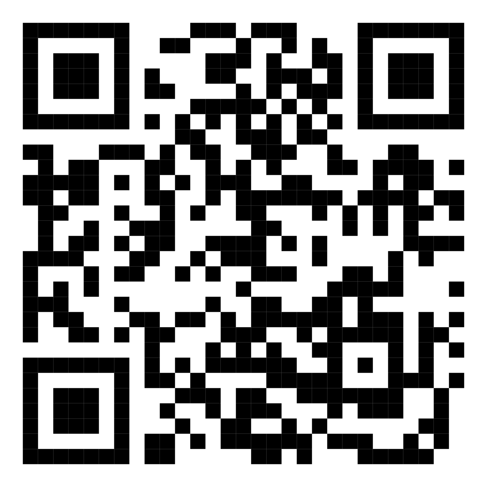

Scansionate per connettervi
Connessione facile & veloce
Scansionate il codice QR con la fotocamera del vostro smartphone per connettervi automaticamente alla rete Wi-Fi di Ca'Cino. In alternativa, usate le credenziali qui sotto.
Rete
CaCino_WiFi
Password
••••••••••
🔧 Problemi di connessione? Il router è nel corridoio.
Provate a spegnerlo e riaccenderlo tenendo premuto il tasto
posteriore per 10 secondi. Se il problema persiste,
contattateci.